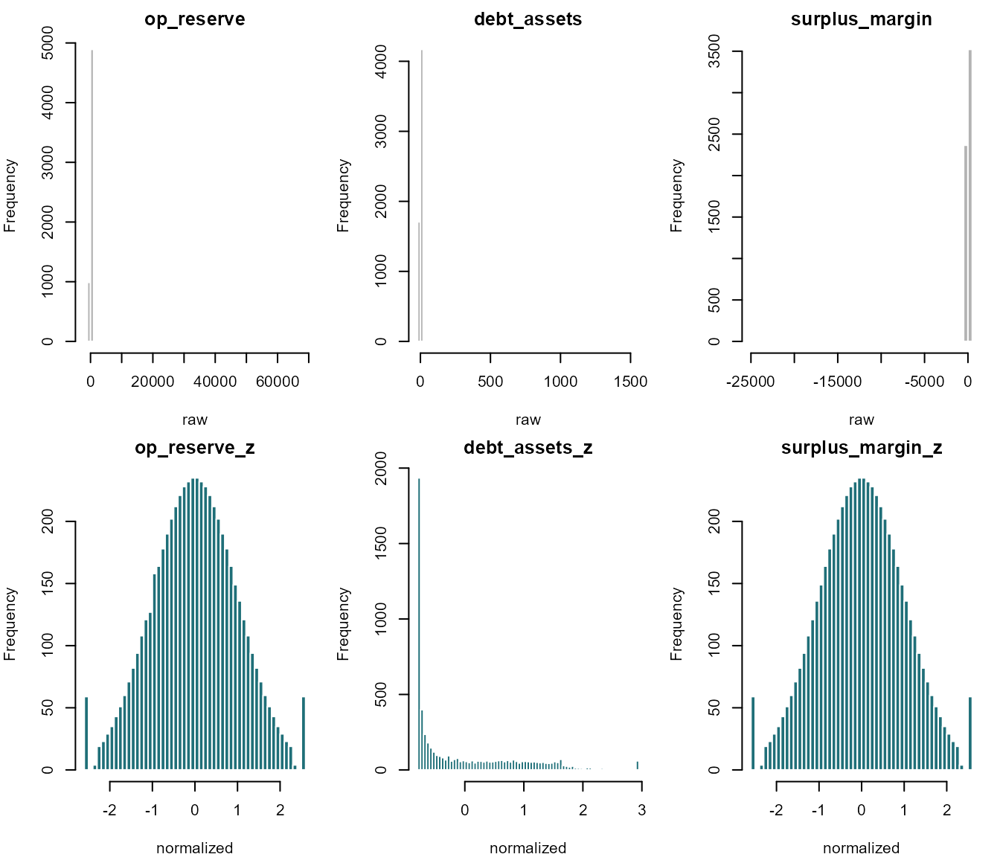
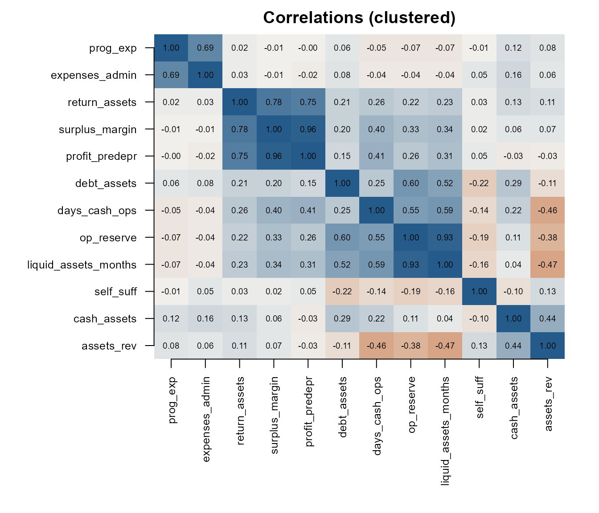
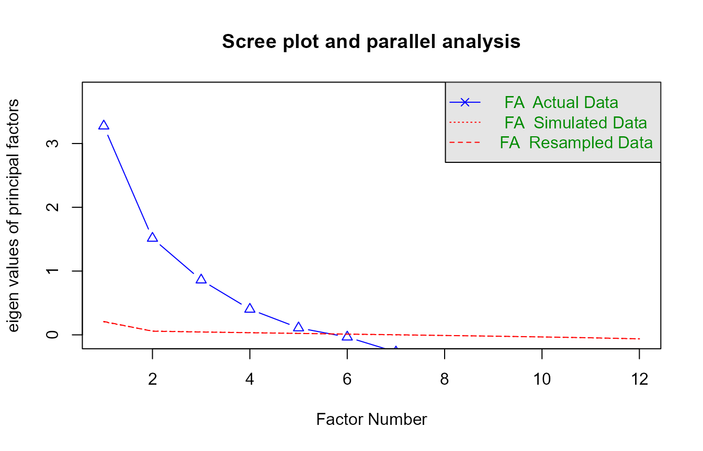
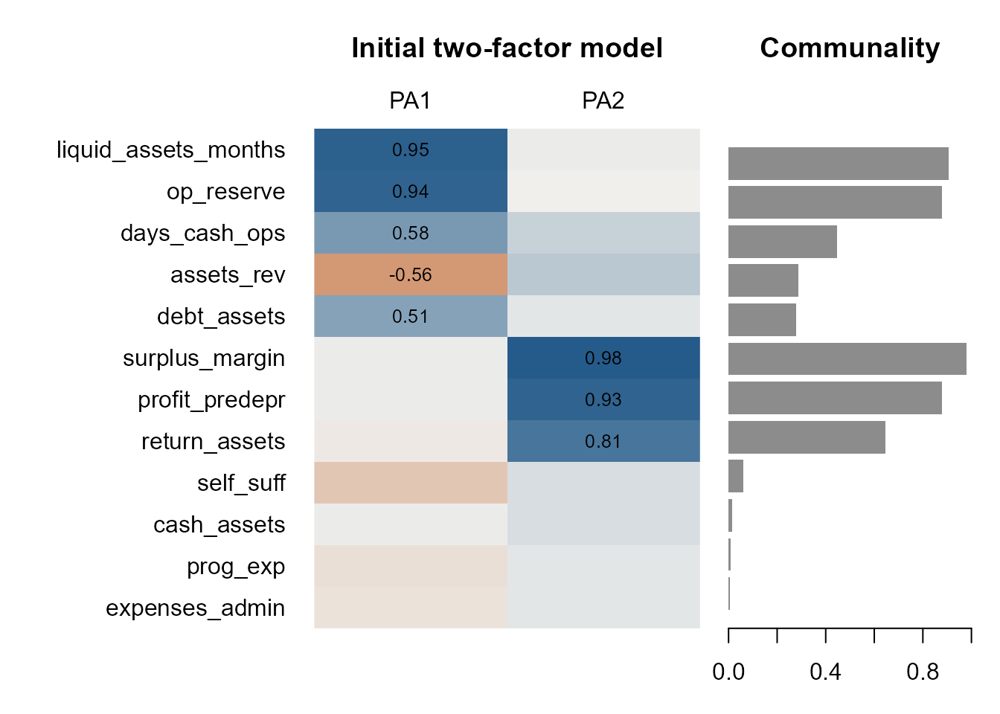
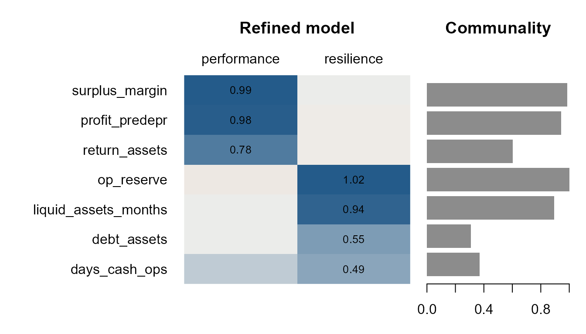
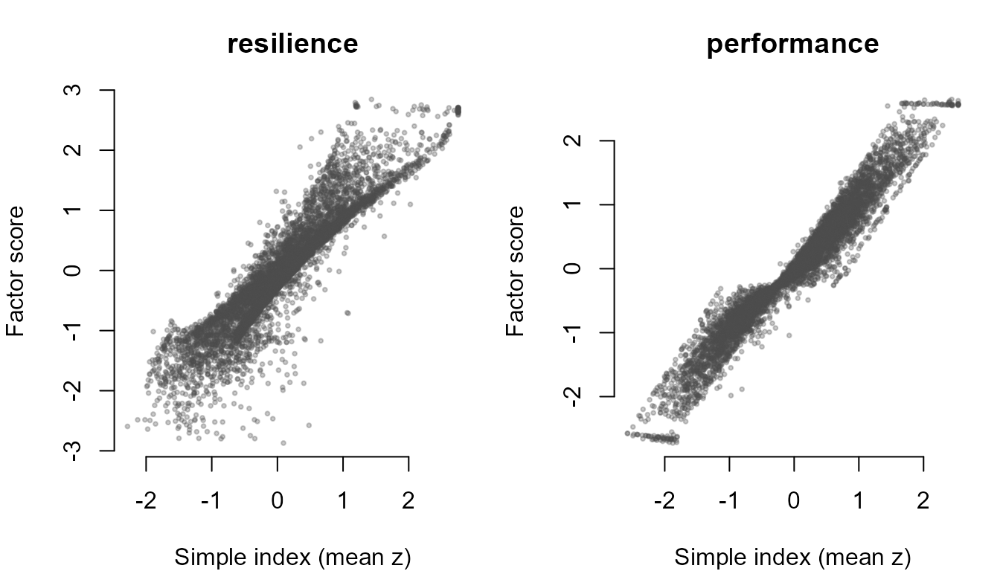

Building a fiscal health index: a measurement approach
Source:vignettes/fiscal-health-index.Rmd
fiscal-health-index.RmdNobody observes fiscal health directly. What we observe are
dozens of accounting ratios, each a noisy, partial reflection of an
organization’s financial condition. This vignette treats fiscal health
the way a psychometrician treats an unobserved trait: as a
latent construct that we measure by combining
indicators. It follows the factor-analysis recipe in Measurement
with factor analysis, applied to 2023 Form 990 filers in
dat10k.
For the software pipeline that turns a reviewed model into reusable
scores, see vignette("fiscal-health-workflow"). This
vignette is about the measurement decisions that come before
it.
What the model assumes
Factor analysis assumes that each standardized indicator is a weighted combination of a few shared latent factors plus a part unique to that indicator:
- : the observed indicators (standardized fiscal ratios)
- : the latent factors, the dimensions of fiscal health we want to recover
- : the loadings, how strongly each indicator reflects each factor
- : the uniqueness, variance the factors do not explain, including measurement error and ratio-specific quirks
Three outputs matter most. Loadings tell us what each factor means. Communality () is the share of an indicator’s variance explained by the factors. Factor scores are each organization’s estimated position on each dimension, the building blocks of an index.
A caveat specific to financial ratios. The model is reflective: it assumes the latent condition causes the indicators to move together. Accounting ratios also move together mechanically, because they share numerators and denominators (equity is literally one minus the debt ratio). Part of the measurement work below is separating substantive covariation from arithmetic.
2. Conceptualize the construct and choose candidate indicators
Measurement starts with theory, not data. We define fiscal health as an organization’s capacity to keep delivering its mission through ordinary shocks. The nonprofit finance literature (Tuckman & Chang 1991; Greenlee & Trussel 2000; Bowman 2011) suggests at least two facets:
- Resilience (stocks): cash and reserves relative to spending, and how much of the balance sheet is financed by debt.
- Operating performance (flows): whether revenues cover expenses year to year.
Content validity also tells us what fiscal health is not. The share of spending on programs or administration, and how much revenue comes from fees, describe a business model or an efficiency norm. We include three such indicators on purpose: if the model is measuring fiscal condition, they should not load on its factors (a check on discriminant validity).
fiscal_metrics() is the data dictionary. It records each
metric’s category and the direction in which it is healthier.
reg <- fiscal_metrics()
candidates <- c(
# resilience
"days_cash_ops", "op_reserve", "liquid_assets_months", "cash_assets", "debt_assets",
# operating performance
"surplus_margin", "profit_predepr", "return_assets",
# business model / efficiency (discriminant checks)
"self_suff", "prog_exp", "expenses_admin",
# asset intensity
"assets_rev"
)
dd <- reg[match(candidates, reg$metric), c("metric", "function_name", "category", "direction")]
dd$domain <- c(rep("resilience", 5), rep("performance", 3),
rep("business model", 3), "asset intensity")
knitr::kable(dd, row.names = FALSE)| metric | function_name | category | direction | domain |
|---|---|---|---|---|
| days_cash_ops | get_days_cash_operations | liquidity | higher | resilience |
| op_reserve | get_operating_reserve_ratio | asset_structure | higher | resilience |
| liquid_assets_months | get_liquid_assets_months | liquidity | higher | resilience |
| cash_assets | get_cash_assets_ratio | liquidity | higher | resilience |
| debt_assets | get_debt_assets_ratio | solvency | lower | resilience |
| surplus_margin | get_surplus_margin_ratio | performance | higher | performance |
| profit_predepr | get_profit_margin_predepr | performance | higher | performance |
| return_assets | get_return_assets_ratio | performance | higher | performance |
| self_suff | get_self_sufficiency_ratio | performance | higher | business model |
| prog_exp | get_program_expenses_ratio | expense_structure | higher | business model |
| expenses_admin | get_expenses_admin_ratio | expense_structure | lower | business model |
| assets_rev | get_assets_revenue_ratio | asset_structure | lower | asset intensity |
Many metrics in the registry were screened out before this point, and each screen is itself a measurement decision:
-
Composition measures (revenue mix, expense mix,
asset mix) have direction
"context": more is not clearly better or worse. -
Dollar levels (
cash_on_hand) measure size, not condition. - Structural missingness: current, quick, and cash-liquidity ratios are undefined when current liabilities are zero, which is true of a large share of filers.
-
Algebraic identities:
equityis1 - debt_assets,months_cash_opsis a rescaleddays_cash_ops, andoverheadis1 - prog_exp. Identities make the correlation matrix singular and inflate a construct’s apparent weight. -
Signed denominators: ratios over net assets
(
debt_equity,return_netassets,netassets_growth) flip sign when net assets are negative, so they are not monotone in health.
The analysis sample
Most indicators require full Form 990 detail (Part IX functional expenses and Part X balance sheet), so the sample is full-990 filers with positive revenue, expenses, and assets.
d <- dat10k[dat10k$RETURN_TYPE == "990" &
dat10k$F9_08_REV_TOT_TOT > 0 & !is.na(dat10k$F9_08_REV_TOT_TOT) &
dat10k$F9_09_EXP_TOT_TOT > 0 & !is.na(dat10k$F9_09_EXP_TOT_TOT) &
dat10k$F9_10_ASSET_TOT_EOY > 0 & !is.na(dat10k$F9_10_ASSET_TOT_EOY), ]
scored <- compute_all(d, metrics = c("ratio", "z"), append_to_df = FALSE,
verbose = FALSE)
nrow(scored)
#> [1] 58923. Standardize and orient the indicators
Why the _z columns
Factor analysis works on the correlation matrix, the covariance
matrix of z-scores. Plain z-scores of fiscal ratios, though, are
dominated by a handful of organizations with near-zero denominators.
Every get_*() function therefore also returns a
_z column: the ratio is winsorized, passed through a
distribution-aware transformation, and standardized
(vignette("normalization")). The transformation is
monotone, so it preserves the rank ordering of organizations.
Compare three raw ratios with their _z versions:
show <- c("op_reserve", "debt_assets", "surplus_margin")
op <- par(mfrow = c(2, 3), mar = c(4, 4, 2, 1))
for (m in show) hist(scored[[m]], breaks = 60, main = m, xlab = "raw", col = "grey70", border = "white")
for (m in show) hist(scored[[paste0(m, "_z")]], breaks = 60, main = paste0(m, "_z"),
xlab = "normalized", col = "#1f6f78", border = "white")
par(op)The raw histograms are nearly empty: a few extreme values stretch
each axis so far that almost every organization lands in a single bar.
The normalized versions use the whole scale. Some shapes are not bell
curves, and should not be: 28% of filers report no liabilities at all,
so debt_assets_z has a single spike for that tied group,
placed at its middle rank, followed by the rest of the distribution.
A useful check that the transformation has not distorted the
relationships: Pearson correlations of the _z columns
should track the rank (Spearman) correlations of the raw ratios.
raw <- scored[candidates]
raw[] <- lapply(raw, function(x) { x[!is.finite(x)] <- NA; x })
Z <- scored[paste0(candidates, "_z")]
names(Z) <- candidates
r_spearman <- cor(raw, method = "spearman", use = "pairwise.complete.obs")
r_pearson <- cor(Z, use = "pairwise.complete.obs")
low <- lower.tri(r_pearson)
round(cor(r_spearman[low], r_pearson[low]), 3) # agreement across all pairs
#> [1] 0.993Orient every indicator so that higher is healthier
Loadings are easiest to read when every indicator points the same
way. We flip the sign of indicators whose registry direction is
"lower".
flip <- dd$metric[dd$direction == "lower"]
flip
#> [1] "debt_assets" "expenses_admin" "assets_rev"
X <- Z
X[flip] <- lapply(X[flip], function(x) -x)
used <- complete.cases(X) # keep track of the rows that enter the model
X <- X[used, ]
dim(X)
#> [1] 5890 124. Is the data factorable?
Before fitting anything, look at the correlation structure. Ordering the indicators by hierarchical clustering places blocks of correlated indicators next to each other; those blocks are the factors we expect to find.
R <- cor(X)
ord <- hclust(as.dist(1 - abs(R)))$order
Ro <- R[ord, ord]
pal <- colorRampPalette(c("#bd5416", "#f0efec", "#245b8a"))(101)
op <- par(mar = c(9, 9, 2, 2))
image(1:ncol(Ro), 1:nrow(Ro), t(Ro)[, nrow(Ro):1], zlim = c(-1, 1), col = pal,
axes = FALSE, xlab = "", ylab = "", main = "Correlations (clustered)")
axis(1, at = 1:ncol(Ro), labels = colnames(Ro), las = 2, cex.axis = 0.8)
axis(2, at = nrow(Ro):1, labels = rownames(Ro), las = 1, cex.axis = 0.8)
text(rep(1:ncol(Ro), each = nrow(Ro)), rep(nrow(Ro):1, ncol(Ro)),
sprintf("%.2f", Ro), cex = 0.6)
par(op)Two standard checks:
- Kaiser-Meyer-Olkin (KMO) measures how much of each correlation is shared with the other indicators. Above 0.70 is good; indicators below 0.50 share little with the set and are candidates for removal.
- Bartlett’s test asks whether the correlation matrix differs from an identity matrix. A small p-value means there is shared variance to factor.
kmo <- KMO(R)
bart <- cortest.bartlett(R, n = nrow(X))
round(kmo$MSA, 2)
#> [1] 0.64
sort(round(kmo$MSAi, 2))
#> cash_assets assets_rev expenses_admin
#> 0.32 0.48 0.51
#> prog_exp profit_predepr days_cash_ops
#> 0.52 0.64 0.65
#> op_reserve surplus_margin liquid_assets_months
#> 0.65 0.65 0.71
#> self_suff debt_assets return_assets
#> 0.72 0.73 0.92
bart$p.value
#> [1] 0The overall KMO of 0.64 is mediocre but workable, and Bartlett’s test
rejects an identity matrix. The item-level values already flag
cash_assets and assets_rev as sharing little
with the other indicators.
5. How many factors?
A scree plot shows the eigenvalues in descending order; look for the elbow. Parallel analysis compares them with eigenvalues from random data of the same size and keeps the factors that beat the random benchmark.
set.seed(2023)
pa <- fa.parallel(X, fm = "pa", fa = "fa", n.iter = 50,
main = "Scree plot and parallel analysis")
#> Parallel analysis suggests that the number of factors = 5 and the number of components = NA
pa$nfact
#> [1] 5
round(pa$fa.values, 2)
#> [1] 3.27 1.51 0.86 0.40 0.11 -0.03 -0.27 -0.33 -0.37 -0.50 -0.67 -0.70With thousands of organizations, even trivial factors beat random noise, so parallel analysis recommends 5 factors. The scree plot tells a simpler story: two large factors, a much smaller third, then a flat tail. The number of factors is a judgment that balances statistical evidence against interpretability, so we compare two and three.
fa2 <- fa(X, nfactors = 2, fm = "pa", rotate = "oblimin")
fa3 <- fa(X, nfactors = 3, fm = "pa", rotate = "oblimin")
print(fa3$loadings, cutoff = 0.30, sort = TRUE)
#>
#> Loadings:
#> PA2 PA3 PA1
#> days_cash_ops 0.570
#> op_reserve 0.953
#> liquid_assets_months 0.951
#> debt_assets 0.549
#> assets_rev -0.519
#> surplus_margin 0.998
#> profit_predepr 0.941
#> return_assets 0.802
#> prog_exp 0.766
#> expenses_admin 0.816
#> cash_assets
#> self_suff
#>
#> PA2 PA3 PA1
#> SS loadings 2.784 2.630 1.396
#> Proportion Var 0.232 0.219 0.116
#> Cumulative Var 0.232 0.451 0.568
L3 <- unclass(fa3$loadings)
main_cols <- c(which.max(abs(L3["op_reserve", ])), which.max(abs(L3["surplus_margin", ])))
third <- setdiff(seq_len(ncol(L3)), main_cols)
third_items <- rownames(L3)[abs(L3[, third]) >= 0.40]
third_items
#> [1] "prog_exp" "expenses_admin"The first two factors are the same resilience and performance
structure found with two factors. The third is defined by
prog_exp and expenses_admin, indicators the
content screen in section 2 already classified as business-model or
asset-mix measures. A factor built from how an organization spends or
structures its assets is not a dimension of fiscal health, so we keep
two factors.
6. Fit the factor model
psych::fa() fits the model:
-
nfactors = 2, as chosen above -
fm = "pa": principal axis factoring, which does not assume multivariate normality (fiscal ratios are far from normal) -
rotate = "oblimin": an oblique rotation. There is no reason to believe that resilience and operating performance are uncorrelated (surpluses build reserves), so we let the factors correlate and estimate that correlation.
print(fa2, digits = 2, cut = 0.30, sort = TRUE)
#> Factor Analysis using method = pa
#> Call: fa(r = X, nfactors = 2, rotate = "oblimin", fm = "pa")
#> Standardized loadings (pattern matrix) based upon correlation matrix
#> item PA1 PA2 h2 u2 com
#> liquid_assets_months 3 0.95 0.9070 0.093 1.0
#> op_reserve 2 0.94 0.8786 0.121 1.0
#> days_cash_ops 1 0.58 0.4473 0.553 1.2
#> assets_rev 12 -0.56 0.2859 0.714 1.4
#> debt_assets 5 0.51 0.2774 0.723 1.0
#> self_suff 9 0.0617 0.938 1.4
#> prog_exp 10 0.0095 0.990 1.6
#> expenses_admin 11 0.0064 0.994 1.8
#> surplus_margin 6 0.98 0.9795 0.020 1.0
#> profit_predepr 7 0.93 0.8776 0.122 1.0
#> return_assets 8 0.81 0.6446 0.355 1.0
#> cash_assets 4 0.0150 0.985 1.1
#>
#> PA1 PA2
#> SS loadings 2.77 2.62
#> Proportion Var 0.23 0.22
#> Cumulative Var 0.23 0.45
#> Proportion Explained 0.51 0.49
#> Cumulative Proportion 0.51 1.00
#>
#> With factor correlations of
#> PA1 PA2
#> PA1 1.00 0.32
#> PA2 0.32 1.00
#>
#> Mean item complexity = 1.2
#> Test of the hypothesis that 2 factors are sufficient.
#>
#> df null model = 66 with the objective function = 8.92 with Chi Square = 52469.41
#> df of the model are 43 and the objective function was 2.41
#>
#> The root mean square of the residuals (RMSR) is 0.12
#> The df corrected root mean square of the residuals is 0.15
#>
#> The harmonic n.obs is 5890 with the empirical chi square 5705.11 with prob < 0
#> The total n.obs was 5890 with Likelihood Chi Square = 14166.02 with prob < 0
#>
#> Tucker Lewis Index of factoring reliability = 0.586
#> RMSEA index = 0.236 and the 90 % confidence intervals are 0.233 0.239
#> BIC = 13792.73
#> Fit based upon off diagonal values = 0.86
#> Measures of factor score adequacy
#> PA1 PA2
#> Correlation of (regression) scores with factors 0.96 0.98
#> Multiple R square of scores with factors 0.93 0.96
#> Minimum correlation of possible factor scores 0.86 0.927. Interpret the loadings and refine
Rules of thumb: |loading| ≥ 0.30 is potentially meaningful, and ≥ 0.40 is strong. A loadings heatmap shows the whole structure at once, with each indicator’s communality alongside.
plot_loadings <- function(f, main = "") {
L <- unclass(f$loadings)
h2 <- f$communality
primary <- apply(abs(L), 1, which.max)
peak <- apply(abs(L), 1, max)
o <- order(ifelse(peak < 0.30, ncol(L) + 1, primary), -peak)
L <- L[o, , drop = FALSE]; h2 <- h2[o]
pal <- colorRampPalette(c("#bd5416", "#f0efec", "#245b8a"))(101)
layout(matrix(1:2, 1), widths = c(3, 1.2))
op <- par(mar = c(3, 11, 4.5, 0.5))
Lc <- pmax(pmin(L, 1), -1) # Heywood loadings can exceed 1; clamp the colors only
image(1:ncol(L), 1:nrow(L), t(Lc[nrow(L):1, , drop = FALSE]), zlim = c(-1, 1),
col = pal, axes = FALSE, xlab = "", ylab = "")
title(main, line = 2.5)
axis(3, at = 1:ncol(L), labels = colnames(L), tick = FALSE, line = -0.5)
axis(2, at = nrow(L):1, labels = rownames(L), las = 1, tick = FALSE)
txt <- ifelse(abs(L) >= 0.30, sprintf("%.2f", L), "")
text(rep(1:ncol(L), each = nrow(L)), rep(nrow(L):1, ncol(L)), txt, cex = 0.8)
par(mar = c(3, 0.5, 4.5, 1))
barplot(rev(pmin(h2, 1)), horiz = TRUE, xlim = c(0, 1), names.arg = "",
col = "grey55", border = NA, space = 0.2)
title("Communality", line = 2.5)
par(op); layout(1)
}
plot_loadings(fa2, "Initial two-factor model")
Reading down the columns:
- Resilience: operating reserves, liquid unrestricted net assets, and days of cash load together, with debt (reversed) loading on the same factor.
- Operating performance: surplus margin, the pre-depreciation margin, and return on assets.
The rows at the bottom are just as informative.
Program-expense share, administrative share, and
self-sufficiency load on neither factor and have communalities
near zero. The construct we are recovering is financial condition, not
spending efficiency or revenue model, which is the discriminant validity
we hoped to see. cash_assets also has almost no
communality; it measures the composition of the asset base, not its
adequacy.
assets_rev is a different kind of problem. After
orientation (its registry direction is "lower"), it loads
negatively on resilience: organizations with more assets per
dollar of revenue also hold larger reserves. The indicator’s meaning is
ambiguous, so it cannot be scored in a single healthy direction.
Refinement. Following the rules above, drop the indicators with low KMO or low communality, and the indicator whose direction is ambiguous:
drop <- c("self_suff", "prog_exp", "expenses_admin", "cash_assets", "assets_rev")
items <- setdiff(candidates, drop)
X2 <- X[items]
round(KMO(cor(X2))$MSA, 2)
#> [1] 0.7
fit <- fa(X2, nfactors = 2, fm = "pa", rotate = "oblimin", scores = "tenBerge")
print(fit, digits = 2, cut = 0.30, sort = TRUE)
#> Factor Analysis using method = pa
#> Call: fa(r = X2, nfactors = 2, rotate = "oblimin", scores = "tenBerge",
#> fm = "pa")
#> Standardized loadings (pattern matrix) based upon correlation matrix
#> item PA2 PA1 h2 u2 com
#> surplus_margin 5 0.99 0.99 0.0130 1.0
#> profit_predepr 6 0.98 0.94 0.0573 1.0
#> return_assets 7 0.78 0.60 0.3968 1.0
#> op_reserve 2 1.02 1.01 -0.0071 1.0
#> liquid_assets_months 3 0.94 0.89 0.1052 1.0
#> debt_assets 4 0.55 0.31 0.6904 1.0
#> days_cash_ops 1 0.49 0.37 0.6311 1.4
#>
#> PA2 PA1
#> SS loadings 2.62 2.49
#> Proportion Var 0.37 0.36
#> Cumulative Var 0.37 0.73
#> Proportion Explained 0.51 0.49
#> Cumulative Proportion 0.51 1.00
#>
#> With factor correlations of
#> PA2 PA1
#> PA2 1.00 0.33
#> PA1 0.33 1.00
#>
#> Mean item complexity = 1.1
#> Test of the hypothesis that 2 factors are sufficient.
#>
#> df null model = 21 with the objective function = 6.68 with Chi Square = 39344.57
#> df of the model are 8 and the objective function was 0.3
#>
#> The root mean square of the residuals (RMSR) is 0.03
#> The df corrected root mean square of the residuals is 0.05
#>
#> The harmonic n.obs is 5890 with the empirical chi square 100.87 with prob < 2.8e-18
#> The total n.obs was 5890 with Likelihood Chi Square = 1745.66 with prob < 0
#>
#> Tucker Lewis Index of factoring reliability = 0.884
#> RMSEA index = 0.192 and the 90 % confidence intervals are 0.185 0.2
#> BIC = 1676.21
#> Fit based upon off diagonal values = 1
#> Measures of factor score adequacy
#> PA2 PA1
#> Correlation of (regression) scores with factors 0.99 1
#> Multiple R square of scores with factors 0.98 1
#> Minimum correlation of possible factor scores 0.96 1KMO rises to 0.7, and the root mean square of the residuals is 0.03: two factors reproduce the correlations among these indicators closely. (Chi-square based statistics such as RMSEA penalize any misfit heavily with samples this large and non-normal indicators; the goal here is an interpretable measure, not a close-fitting confirmatory model.)
Name the factors
L <- unclass(fit$loadings)
res_col <- which.max(abs(L["op_reserve", ]))
perf_col <- which.max(abs(L["surplus_margin", ]))
factor_names <- setNames(c("resilience", "performance"),
colnames(L)[c(res_col, perf_col)])
factor_names
#> PA1 PA2
#> "resilience" "performance"
f_named <- fit
colnames(f_named$loadings) <- factor_names[colnames(fit$loadings)]
plot_loadings(f_named, "Refined model")
About the Heywood case
op_reserve has a communality at or slightly above 1.00
(an ultra-Heywood case), which is impossible for a true
variance share. The reason is visible in the correlation matrix:
operating reserves and liquid unrestricted net assets are correlated
0.93. The two formulas differ only in whether mortgage debt is added
back, so the resilience factor is defined almost entirely by this
near-duplicate pair. The same is true of the surplus margin and the
pre-depreciation margin (0.96). The solution remains usable, but the
next section checks that it does not depend on the estimator, and the
refinement notes below return to redundancy.
Factor correlation
Phi <- fit$Phi
dimnames(Phi) <- list(factor_names[colnames(fit$loadings)], factor_names[colnames(fit$loadings)])
round(Phi, 2)
#> performance resilience
#> performance 1.00 0.33
#> resilience 0.33 1.00Resilience and performance are positively but modestly correlated (0.33). They are related, distinct dimensions, which matters for how an overall index should be built.
8. Does the solution depend on the estimator?
Refit with maximum likelihood and compare the loadings. Congruence above 0.95 means the factors are essentially the same.
fit_ml <- fa(X2, nfactors = 2, fm = "ml", rotate = "oblimin")
round(factor.congruence(fit, fit_ml), 2)
#> ML1 ML2
#> PA2 1.00 0.04
#> PA1 0.03 1.00Each principal-axis factor has a maximum-likelihood twin with congruence near 1.00, so the two dimensions are not an artifact of the estimation method.
9. Extract the new features
Factor scores give every organization a value on each dimension. With an oblique rotation, the ten Berge method preserves the factor correlations.
scores <- as.data.frame(fit$scores)
names(scores) <- paste0("fh_", factor_names[names(scores)])
head(round(scores, 2))
#> fh_performance fh_resilience
#> 2 -1.79 0.99
#> 4 -0.88 -0.94
#> 10 -1.83 0.44
#> 12 -0.84 -1.72
#> 15 -0.18 -1.29
#> 16 -0.02 -0.41
round(cor(scores), 2)
#> fh_performance fh_resilience
#> fh_performance 1.00 0.33
#> fh_resilience 0.33 1.0010. Weighted scores versus a simple index
How much does factoring buy over the simplest approach, averaging the oriented z-scores of the indicators that define each dimension? Cronbach’s alpha tells us whether those indicators are reliable as a unit-weighted scale.
dims <- list(
resilience = c("days_cash_ops", "op_reserve", "liquid_assets_months", "debt_assets"),
performance = c("surplus_margin", "profit_predepr", "return_assets")
)
compare <- do.call(rbind, lapply(names(dims), function(k) {
simple <- rowMeans(X2[dims[[k]]])
data.frame(
dimension = k,
items = length(dims[[k]]),
cronbach_alpha = round(psych::alpha(X2[dims[[k]]])$total$raw_alpha, 2),
r_simple_vs_score = round(cor(simple, scores[[paste0("fh_", k)]]), 2)
)
}))
compare
#> dimension items cronbach_alpha r_simple_vs_score
#> 1 resilience 4 0.83 0.92
#> 2 performance 3 0.94 0.97
op <- par(mfrow = c(1, 2), mar = c(4, 4, 3, 1))
for (k in names(dims)) {
plot(rowMeans(X2[dims[[k]]]), scores[[paste0("fh_", k)]],
pch = 19, cex = 0.4, col = grDevices::adjustcolor("grey30", 0.3), bty = "n",
xlab = "Simple index (mean z)", ylab = "Factor score", main = k)
}
par(op)Both dimensions are reliable scales, and the factor scores correlate highly with the simple averages. Weighting matters most when some indicators are much noisier than others. The scoring weights show where the two approaches part ways:
W <- fit$weights
colnames(W) <- factor_names[colnames(W)]
round(W, 2)
#> performance resilience
#> days_cash_ops 0.00 -0.02
#> op_reserve -0.10 1.03
#> liquid_assets_months 0.07 0.03
#> debt_assets 0.03 -0.07
#> surplus_margin 0.80 -0.23
#> profit_predepr 0.21 0.25
#> return_assets -0.01 0.03The resilience score is essentially op_reserve alone,
the Heywood indicator, and it even gives surplus_margin a
negative weight (an oblique model uses the performance
indicators to net out the correlation between the factors). The
performance score leans mostly on surplus_margin. A
unit-weighted average spreads the weight across all of a dimension’s
indicators, so it is less sensitive to any one ratio; with
near-duplicate indicators like these, that robustness is a good reason
to prefer the simple index until the redundancy is resolved.
11. From dimensions to an index
The two dimensions answer different questions, so the most informative output is a profile: an organization can have deep reserves and a current-year deficit (drawing down savings on purpose), or a healthy surplus and almost no cushion. When a single number is needed, the simplest defensible composite weights the dimensions equally.
index <- data.frame(scores,
fiscal_health = rowMeans(scale(scores)))
summary(index$fiscal_health)
#> Min. 1st Qu. Median Mean 3rd Qu. Max.
#> -2.69001 -0.56817 -0.09575 0.00000 0.50198 2.68829Validity: does the index separate organizations known to differ?
A measure should rank organizations in ways that match conditions we can verify directly in the raw filings (known-groups validity). The conditions below are not inputs to the index: a cash balance that fell by a quarter or more, a decline in total net assets, negative total net assets, and current liabilities exceeding current assets.
stopifnot(identical(scored$EIN2, d$EIN2)) # compute_all() preserves row order
d_used <- d[used, ]
s_used <- scored[used, ]
quintile <- cut(index$fiscal_health,
quantile(index$fiscal_health, 0:5 / 5),
include.lowest = TRUE, labels = paste0("Q", 1:5))
share <- function(condition) round(tapply(condition, quintile, mean, na.rm = TRUE), 2)
validity <- data.frame(
quintile = levels(quintile),
cash_fell_25pct = share(s_used$cash_burn < 0.75),
net_assets_declined = share(s_used$netassets_growth < 0),
negative_net_assets = share(d_used$F9_10_NAFB_TOT_EOY < 0),
current_ratio_below_1 = share(s_used$current < 1)
)
knitr::kable(validity, row.names = FALSE)| quintile | cash_fell_25pct | net_assets_declined | negative_net_assets | current_ratio_below_1 |
|---|---|---|---|---|
| Q1 | 0.58 | 0.77 | 0.22 | 0.18 |
| Q2 | 0.29 | 0.63 | 0.04 | 0.05 |
| Q3 | 0.23 | 0.31 | 0.01 | 0.04 |
| Q4 | 0.20 | 0.09 | 0.00 | 0.03 |
| Q5 | 0.23 | 0.03 | 0.00 | 0.04 |
Every warning sign is most common in the bottom quintile. Declining net assets fall steadily as the index rises; negative net assets and current liabilities exceeding current assets are concentrated in the bottom quintile. Sharp cash declines drop by half between the first and second quintiles and then level off: a falling cash balance is common even among healthy organizations that move cash into investments or spend down planned reserves.
Notes on refinement
This vignette follows the exploratory recipe step by step. Before treating the index as a validated instrument:
- Resolve redundancy. Operating reserves and liquid unrestricted net assets, and the two margin measures, are near-duplicates. Keep one of each pair, or combine each pair into a single indicator, and refit.
- Add indicators that broaden each dimension. With redundant pairs removed, each factor rests on very few distinct measures. Candidates that survive the screens in section 2 are scarce, which is itself a finding about what the Form 990 can measure.
- Confirm the structure on new data. Fit a confirmatory factor analysis on another tax year before relying on the scores.
-
Check measurement invariance. Hospitals,
universities, and small community organizations may not load the same
way; compare the model across subsectors (
nteev2_subsector) and size groups. -
Freeze the model for reuse. Once the structure is
settled,
fiscal_dimensions(),fiscal_health_fit(), andfiscal_health_score()store the orientation, centering, and weights so later years are scored on the same scale. Seevignette("fiscal-health-workflow").